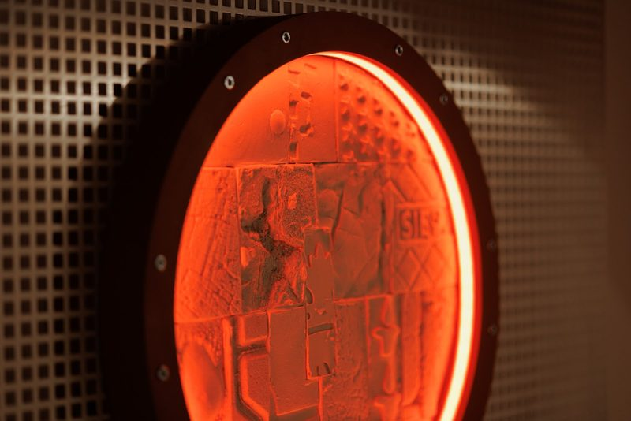

Listening to
what vibrates
It all started around 2020, when I began learning about microcontrollers, the MIDI protocol and software like Max MSP to build interactive sound installations. I was interested in sound not only as something to be heard, but as something that could react, respond, and exist physically in space.
While working with interactive systems, I became increasingly curious about what happens before sound reaches a speaker. Signals, voltages, and vibrations felt more interesting than the final audio output. Instead of shaping sound digitally, I started looking for ways to listen directly to physical phenomena, such as movement, friction, resonance, and electrical activity.
This approach became central during my dissertation, where I developed an early version of what later became the TRT. It wasn’t designed as a finished product, but as an experiment, a way to record texture rather than sound in the traditional sense. Many recordings failed, others revealed unexpected rhythms and structures hidden inside materials. That unpredictability became part of the process.
From that point on, the work evolved through trial and error. I began experimenting with different contact microphones, electromagnetic pickups, materials, and enclosures. I learned to use tools like oscilloscopes not from an engineering background, but as a way to visually understand sound, connecting what I heard with what was physically happening.
ATOMAT LAB sits somewhere between artistic research and instrument making. Interactive programming, electronics, 3D printing, and sound research all merge into the same practice.
The first instrument I started selling was the CRT1. What began as a small, self-built tool quickly received a lot of support and encouraging feedback, which made it clear that this way of listening resonated with others as well. That response pushed the work forward.
I started developing other instruments, refining both the electronics and the physical design, while keeping the same experimental, hands-on approach. This process eventually led to FIELD5, ATOMAT LAB’s top-of-the-line recording instrument: a phantom-powered contact microphone designed to work reliably across different environments, while still revealing the subtle textures and vibrations that conventional microphones often miss.


The instruments
Shop →48V phantom powered · 87 g
2 m cable · mounting kit included
Submersible
Copper shielding · tamed highs
1.5 m cable · 55 g
Submersible
All-rounder · entry point
1 m cable · 13 g
Waterproof
Clocks, phones, displays, TVs
Double inductors · 1 m cable
Plug and play

3D-printed support · 4 mm plexi board
30 cm diameter
FIELD5 attachment